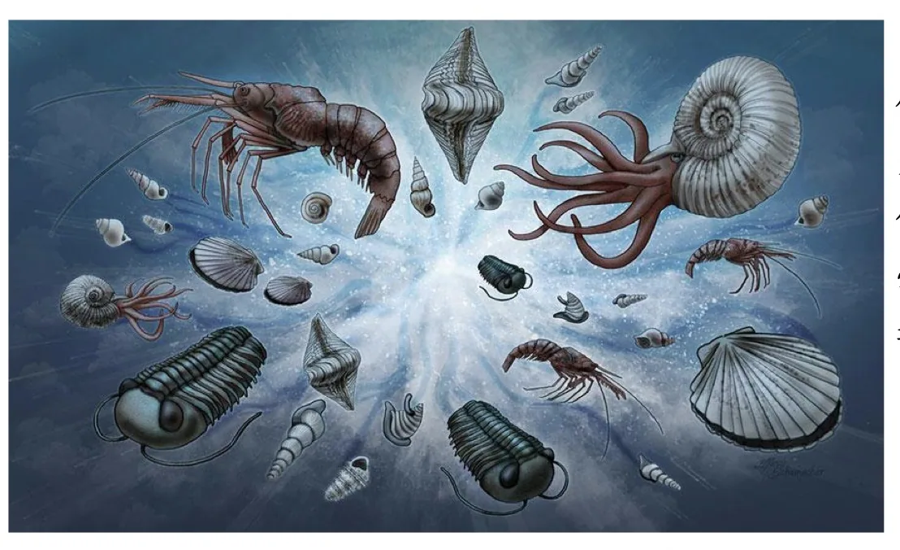
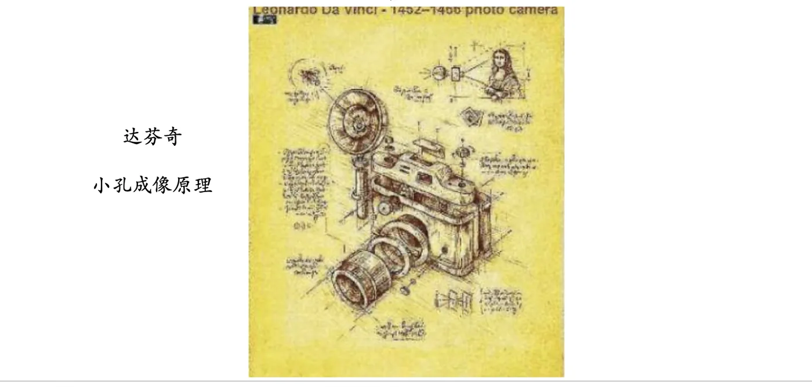
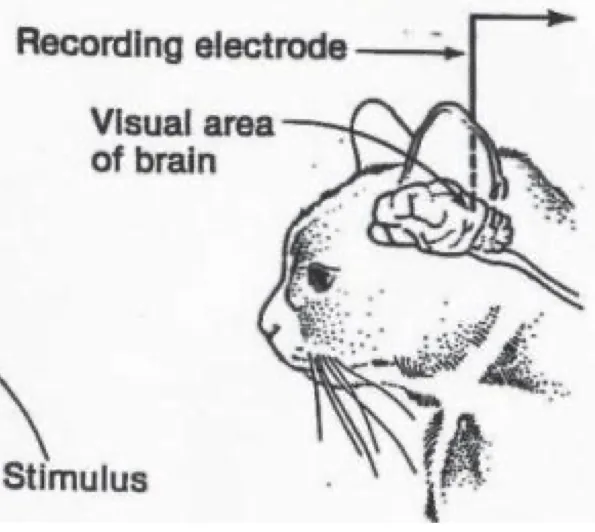
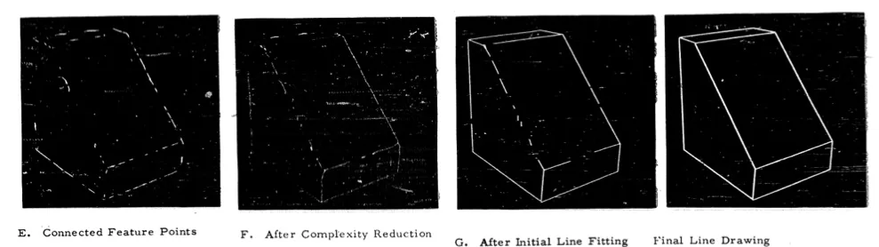
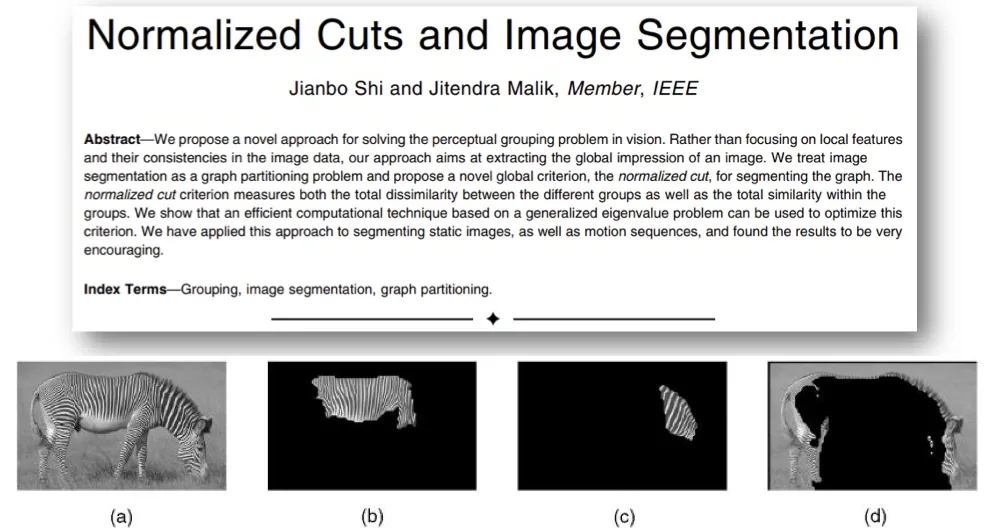
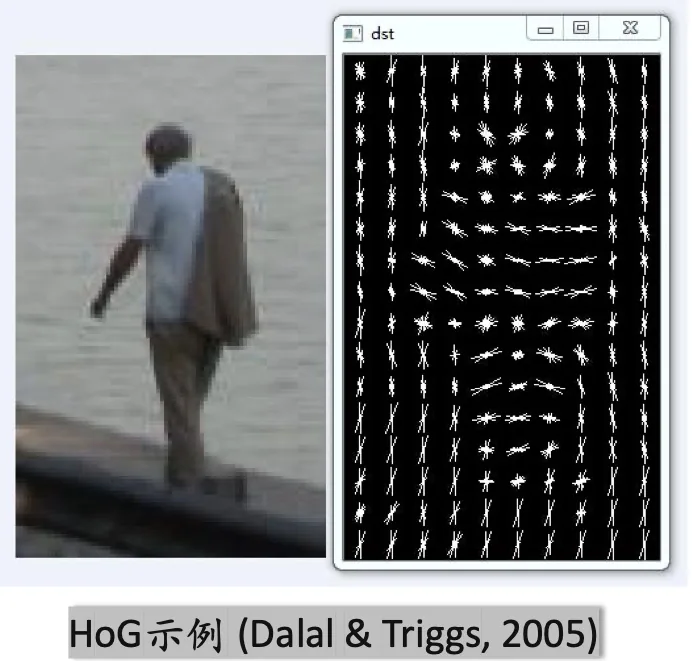
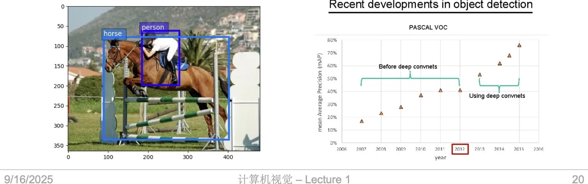
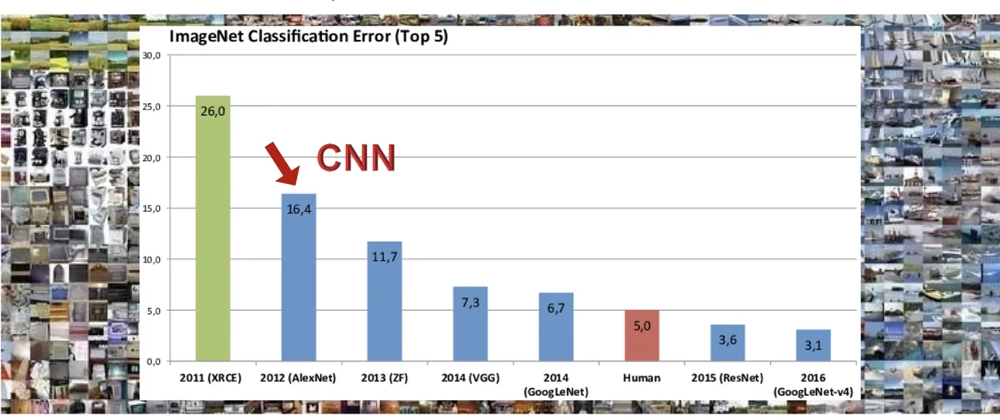

计算机视觉 · 第 1 章 绪论
1.2 计算机视觉发展史
这一节按时间线梳理计算机视觉是从哪儿长出来的。有意思的是，它最早的源头并不在计算机，而在生物学——眼睛怎么进化出来、大脑怎么处理视觉信号，是这门学科最早的问题意识。沿着这条线往下走，才轮到 20 世纪 60 年代机器视觉的起步、70～80 年代 David Marr 建立的理论框架、90 年代的「转向」，以及 21 世纪初传统方法的成熟与 2010 年之后深度学习的爆发。
1. 源头：生物视觉与成像原理
视觉不是人类的专利。地球上最早的眼睛出现在寒武纪生命大爆发时期——正是「看得见」这件事，让生物第一次能够主动感知环境、捕食与避险，从而引发了物种的大爆发。视觉对于生命的意义，海伦·凯勒在《假如给我三天光明》里的这段话讲得最透：
「诸位的眼睛，可以观赏你们喜爱的任何一幕戏。而我不知道，到底会有多少人在观看一幕戏、一场电影或任何一个场面时，意识到让你们可以享受到的色彩、美景与动感的视觉是个奇迹，并对此抱有感激之情呢？」
——《假如给我三天光明》，[美国] 海伦·凯勒

人类对「看」的原理的追问，则要等到成像规律被搞清楚。达·芬奇研究过小孔成像原理，这为后来照相机的诞生提供了基础——有了把三维场景投影到二维平面上的装置，人类才第一次把「看到的景象」固定下来。

真正把视觉从「光学问题」推进到「信息处理问题」的，是 1959 年 Hubel 和 Wiesel 的实验：他们首次从生物学角度研究视觉产生的本质，发现视觉皮层中的神经元并不是对整幅画面作响应，而是各自负责视野中的一小块区域。这块区域就叫感受野（receptive field）——感受器受刺激兴奋时，通过感受器官中的向心神经元将神经冲动（各种感觉信息）传到上位中枢，一个神经元所反应（支配）的刺激区域。

「感受野」这个概念的分量，要到本课程讲卷积神经网络时才会完全显现——卷积核在图像上滑动、每次只看一小块，本质上就是在模拟感受野的工作方式。
2. 20 世纪 60 年代：机器视觉的起步
让机器「看」的第一次认真尝试出现在 1963 年，通常被认为是机器视觉领域的第一篇博士论文（Written by Roberts in 1963）。当时的研究者抱有一种非常乐观的信念：
「人们相信只要提取出物体形状并加以空间关系的描述，那么就可以像「搭积木」般拼出任何复杂的三维场景。」

这种乐观在三年后达到了顶点。1966 年，麻省理工学院（MIT）发起了一个夏季项目（Summer Vision Project，属于 Project MAC 的人工智能组，Seymour Papert 主持，1966 年 7 月 7 日的 Vision Memo No. 100），目标是搭建一个机器视觉系统，完成模式识别（pattern recognition）等工作。与会人员「雄心勃勃」地希望在一个暑假的时间里彻底解决计算机视觉问题。
结果众所周知：这个活动没能达到预期的目的。但它的意义并不在于成败——随后几十年里，人们对于计算机视觉的热情持续高涨，其影响范围也蔓延到了全世界。这个「一个暑假解决视觉」的失败，后来几乎成了这门学科最著名的一个注脚：看，比想象中难得多。
3. 20 世纪 70～80 年代：Marr 的计算理论
把计算机视觉从零散尝试变成一门有理论框架的学科，是大卫·马尔（David Marr）的贡献。他在经典著作《Vision》一书中提出，计算机视觉研究应该分成三个层次：
- 计算理论层：要解决什么问题？为什么这个问题可以用计算的方式解决？
- 表达与算法层：用什么表示信息？用什么算法来实现这个计算？
- 硬件实现层：这套算法在物理上如何实现？
这三个层次构成了计算机视觉研究的基本框架。其中的洞见在于：先问「要算什么」，再问「怎么算」——把问题的定义和实现手段分开，才不会一上来就陷进具体的算法细节。
这本书还引起了人们对计算神经科学的兴趣，引领了计算神经科学的复兴。为了纪念大卫·马尔在视觉计算理论上的开创性贡献，计算机视觉与图像科学领域的最高荣誉被命名为马尔奖（Marr Prize）。
4. 20 世纪 90 年代：转向图像分割
进入 90 年代，人们逐渐认识到计算机视觉是一个非常难的问题，以往的尝试似乎都过于「复杂」。于是有的学者开始「转向」另一个看上去更简单点儿的方向：图像分割（Image Segmentation）。后者的目标在于运用一些图像处理方法将物体分离出来，以此作为图像识别的第一步。
这个转向的思路值得体会：与其一步到位地理解整个场景，不如先做一件相对可控的事——把画面切成一块块有意义的区域。这一步是后面所有识别工作的地基。

5. 21 世纪初：手工特征的时代
21 世纪初，计算机视觉迎来了一批至今仍有影响的方法，它们共同的特点是：由人设计特征，再用相对简单的分类器去判别。
- Adaboost 实时人脸检测：Paul Viola 和 Michael Jones 等人利用 Adaboost 算法出色地完成了人脸的实时检测，并被富士公司应用到商用产品中；
- 空间金字塔匹配 SPM（Spatial Pyramid Matching）：Lazebnik、Schmid 和 Ponce 等人提出，开创性地将图片进行分块和特征提取，以验证图片间的相似度；
- HoG 特征（Histogram of Gradient）：Dalal 和 Triggs 等人提出，用于人物识别；
- 可变形部件模型 DPM（Deformable Parts Model）：Felzenszwalb、McAllester 和 Ramanan 等人提出。

6. 2010 年之后：深度学习大放异彩
分水岭是数据。ImageNet 数据集包含了两万两千种类别、一千四百余万张图片，这样的规模第一次让「用大数据训练深层网络」成为可能。
在目标检测任务上，PASCAL VOC 的 mAP（mean Average Precision）曲线清楚地分成了两条：使用深度卷积网络之后，精度出现了台阶式的跃升。

在图像分类任务上，ImageNet 竞赛的 Top-5 错误率的下降更为直观。课件给出的这张图，把每一年的代表模型和成绩都标了出来：

| 年份 | 代表模型 | Top-5 错误率 |
|---|---|---|
| 2011 | XRCE | 26.0% |
| 2012 | AlexNet | 16.4% |
| 2013 | ZF | 11.7% |
| 2014 | VGG | 7.3% |
| 2014 | GoogLeNet | 6.7% |
| 2015 | ResNet | 3.6% |
| 2016 | GoogLeNet-v4 | 3.1% |
| — | 人类 | 5.0% |
短短五年，错误率从 26.0% 降到 3.1%，并且越过了图中标注的 5.0% 的人类水平。与此同时，网络的层次也在迅速加深：
| 年份 | 模型 | 规模 |
|---|---|---|
| 2011 | 手工特征流水线（Lin et al., CVPR 2011） | Dense grid descriptor（HOG、LBP）→ Coding → Pooling → Linear SVM |
| 2012 | AlexNet | 8 层 |
| 2014 | GoogLeNet | 22 层 |
| 2014 | VGG | 19 层 |
| 2015 | ResNet | 152 层（含 34 层的残差结构） |
把这张表和上一张图对照着看，能看到一条清晰的分界线：2011 年的方法还是「人工设计描述子（HOG、LBP）＋编码＋池化＋线性分类器」的手工流水线；从 2012 年 AlexNet 起，特征本身就交给网络去学了。这正是本课程后半程要重点讲的卷积神经网络所完成的事。
本节小结
- 视觉的源头在生物学：寒武纪生命大爆发中眼睛的出现，让生物第一次能主动感知环境；达·芬奇研究的小孔成像原理则解决了几何成像问题。
- 1959 年 Hubel 和 Wiesel 首次从生物学角度研究视觉产生的本质，提出感受野概念——一个神经元所反应（支配）的刺激区域。它是后来卷积神经网络的思想来源。
- 1963 年 Roberts 的博士论文通常被视为机器视觉领域的第一篇博士论文，「搭积木」式重建三维场景的信念代表了那个年代的乐观；1966 年 MIT 的夏季视觉项目试图用一个暑假彻底解决计算机视觉问题，虽未成功，却点燃了此后几十年的研究热情。
- 70～80 年代，大卫·马尔在《Vision》中提出计算机视觉的三个层次——计算理论层、表达与算法层、硬件实现层，构成这门学科的基本研究框架；该领域的最高荣誉也以他命名为马尔奖。
- 90 年代，研究者认识到问题太难，转向目标更可控的图像分割，把它作为图像识别的第一步；21 世纪初则进入了 Adaboost 人脸检测、SPM、HoG、DPM 等手工特征的时代。
- 2010 年之后，ImageNet（22000 类、1400 余万张图片）提供了数据基础，深度学习在目标检测（PASCAL VOC mAP）与图像分类（ImageNet Top-5 错误率从 2011 年的 26.0% 降到 2016 年的 3.1%，低于人类的 5.0%）两条战线上同时取得突破；网络规模也从 AlexNet 的 8 层一路加深到 ResNet 的 152 层。